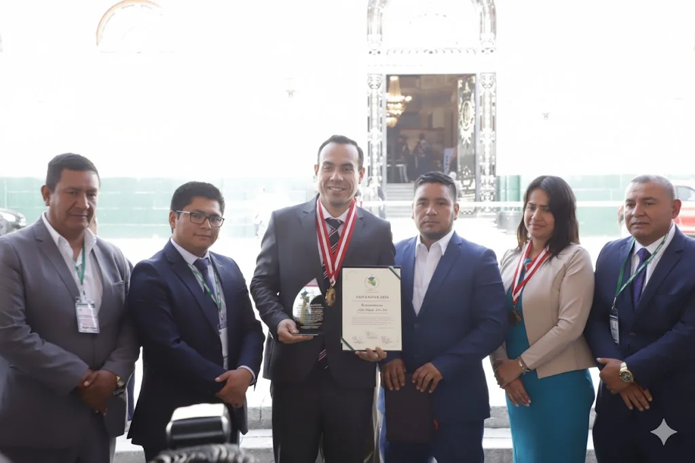
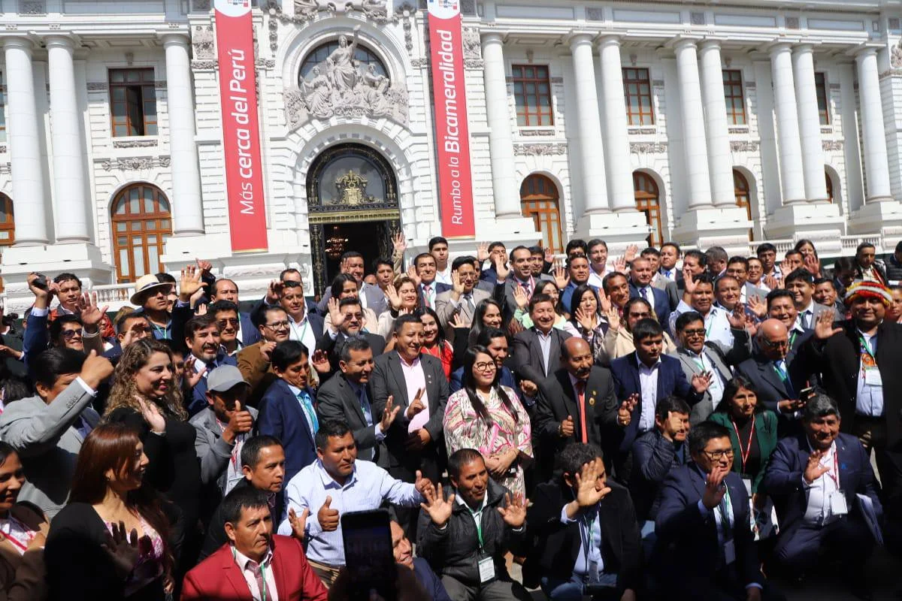
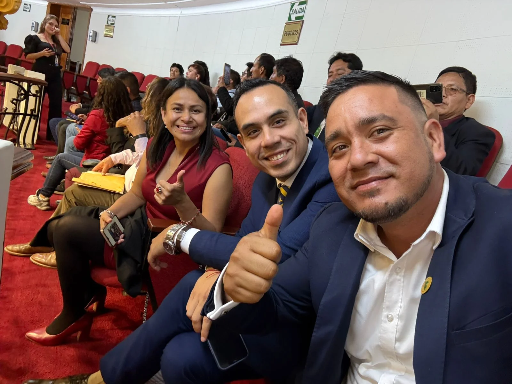

Noticia
10 octubre, 2025

Presidente José Jerí en XVII Conferencia Anual de Municipalidades Urbanas y Rurales del Perú – CAMUR 2025
El gremio municipal REMURPE expresa su formal saludo al señor José Enrique Jerí Oré tras su asunción constitucional como Presidente de la República.
La Red de Municipalidades Urbanas y Rurales del Perú (REMURPE), que congrega a más de mil gobiernos locales en todo el país, expresa su formal saludo al señor José Enrique Jerí Oré tras su asunción constitucional como Presidente de la República.
A través de su Consejo Directivo Nacional y sus Coordinadores Regionales, REMURPE celebra este nuevo periodo democrático y aprovecha la ocasión para reafirmar su compromiso de 25 años con la descentralización y el fortalecimiento de las autonomías municipales, con especial atención a los retos que enfrentan los municipios rurales.
La institución destaca la familiaridad del nuevo mandatario con las demandas del ámbito local. Recordamos el camino que hemos recorrido juntos para impulsar el incremento del FONCOMÚN. Esta trayectoria compartida nos da la certeza de que el Presidente Jerí Oré posee la vocación municipalista necesaria para escuchar y atender eficazmente las necesidades de los gobiernos locales.
Un factor clave que subraya esta confianza es la participación del ahora Presidente, en su rol anterior como Presidente del Congreso de la República, en la reciente XVII Conferencia Anual de Municipalidades del Perú (CAMUR 2025).

Reconocemos el compromiso demostrado en el Parlamento, al anunciar la pronta realización de un histórico Pleno Municipal, que refuerza la convicción de REMURPE en su capacidad para impulsar la agenda descentralista desde el Ejecutivo.
Auguramos el mayor de los éxitos a su gestión. Estamos convencidos de que su liderazgo impulsará un gobierno justo, descentralista y profundamente dedicado al desarrollo territorial equitativo de todo el Perú.
La Red de Municipalidades Urbanas y Rurales del Perú (REMURPE) es una entidad con 25 años de trayectoria dedicada a agrupar, representar y fortalecer a las municipalidades peruanas, promoviendo el desarrollo territorial y la descentralización efectiva en el país.

Cuerpo directivo de REMURPE y presidente del Congreso de la República José Enrique Jerí Oré en CAMUR 2025